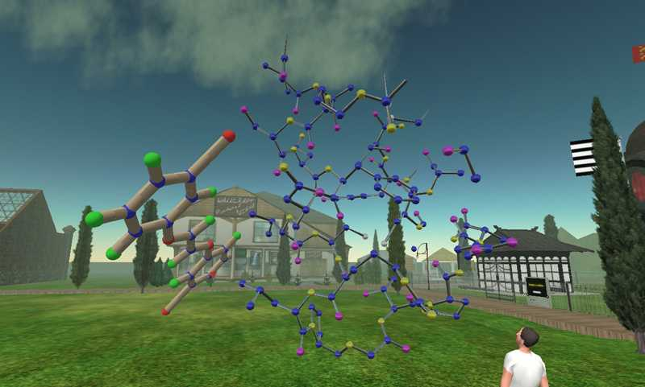
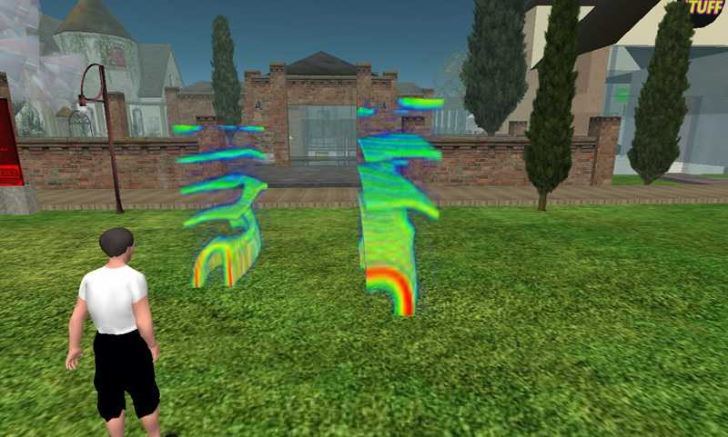
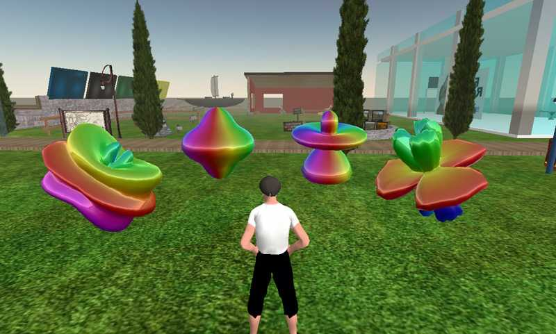
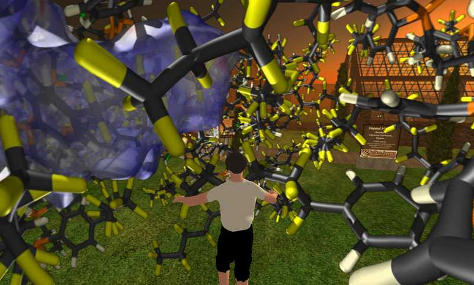
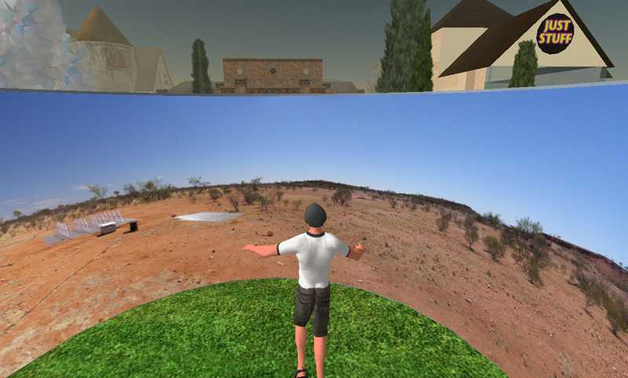

Evaluating Second Life as a tool for
collaborative scientific visualisation
Computer Games and Allied Technology
Singapore, April 28-30, 2008
P.D. Bourke
Abstract: This paper explores the potential of using the online digital world
Second Life as a scientific visualisation tool, in particular, for remote
collaborative exploration of scientific datasets. Second Life at its core
provides a means whereby multiple remote participants can engage with 3D
geometry within a virtual environment. It has been chosen for this evaluation
for a number of reasons, these include the easy to learn user interface, its
relatively widespread uptake, the availability of the player on the three main
computer platforms, its non-aggressive social networking foundation, and the
scripting capability. This paper will outline the desirable characteristics
expected of any online collaborative tool in science research and will
discuss, through examples, the extent to which Second Life meets those expectations.
Keywords:
Scientific visualisation, game engine, multi-player, immersion, Second Life.
Paper: paper.pdf
Presentation: talk.pdf
Figures
|

| |
Figure 1. Representation of 3D molecules in Second Life, JAYFEV strand (left)
and Aspirin (right).
|
|

| |
Figure 2. Volume visualisation of helix wave formation in fluid flow.
|
|

| |
Figure 3. Representation of solutions to the Laplace equations in spherical coordinates.
|
|

| |
Figure 4. Preprocessed spherical projections from inside a crystal including the Hershfield surface.
|
|

| |
Figure 5. Virtual environment, on-site at the Wide Field Array telescope site in Western Australia.
|
|
{kind=link}
{kind=link}
{kind=link}
{kind=link}
{kind=link}